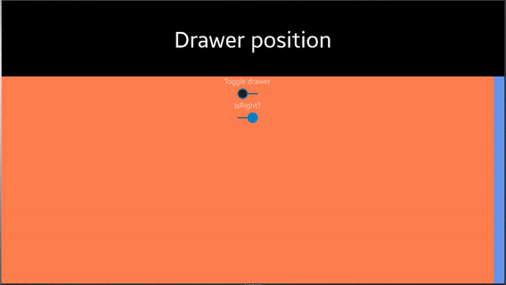

DrawerLayout
Introduction
DrawerLayout is a kind of Layout that acts like a MasterDetailPage. it has a drawer part that interactively pull and push. Drawer part can control with IsOpen property. The open and close action are including animation.

Drawer and Content
DrawerLayout is consist of Drawer and Content view. Drawer is a moving part, Content is fixed part.
Drawer is like a MasterPage and Content is like a DetailPage in MasterDetailPage.
DrawerMode
The developer can control the layout of the content when the drawer was opened by using DrawerMode
DrawerMode.Resize (default)
It is default behavior, Content view is resized to open drawer view

DrawerMode.Panning
Content view is moved to side

DrawerMode.Overlap
Drawer view is overlapped above content view

DrawerPosition
Developers can set position of the drawer. it default on the left side. but if RTL(Right to left) mode enabled, it default on the right side. 
DrawerClosedWidth
Developers can set the width of the closed drawer.